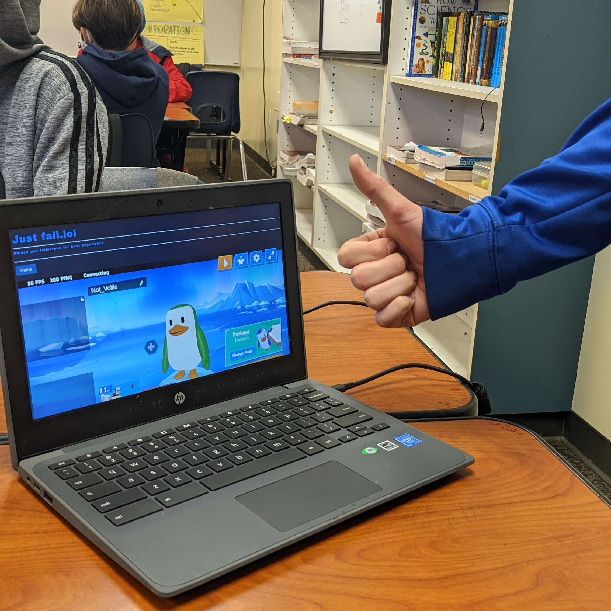

This question has always stumped us because no matter how much I work, I never find a reason for it.
While I do like making people happy and curing boredom, these aren't my only motives.
Web development is something that I generally enjoy and being able to help others while doing something I love is amazing!
Heres a tip: Evan if web development seems boring, hard, or even impossible, just try to learn and you may find some fun in it.
Or at least discover something else that you like!
Photo with Cruz Guzman
How can I suggest games?

Suggesting games is actually quite simple!
To start, simply move your mouse/cursor up to the nav-bar at the top of the page.
Then hover over the button that says 'contact us' on the far right side.
Finally, selcet it and right your suggestion in the body!
It's that simple!
Keep in mind, some games may not make it; however, the vast majority will!